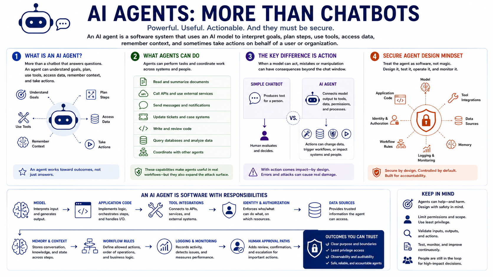

AI Agent Security
What Makes an AI Agent Different?
Connecting to LMS... Progress: in progress
Version 1.0 | Date: 2026-06-16 | AI agent security guidance evolves quickly. Verify current recommendations against official project, vendor, and security guidance.

Narration
An AI agent is more than a chatbot that answers questions. In practical terms, an agent is a software system that can use an AI model to interpret goals, plan steps, use tools, access data, remember context, and sometimes take actions on behalf of a user or organization.
The agent may read documents, call APIs, send messages, update tickets, write code, query databases, or coordinate with other agents. Those capabilities can make agentic systems useful in real workflows, but they also expand the attack surface.
The key difference is action. A simple chatbot usually produces text for a person to evaluate. An agent may connect model output to tools, memory, permissions, data, and business processes. When a model can act, mistakes and manipulation can have consequences beyond the chat window.
Secure agent design starts by treating the agent as software, not magic. The important components are the model, the application code, tool integrations, identity and authorization, data sources, memory, workflow rules, logging, monitoring, and human approval paths.